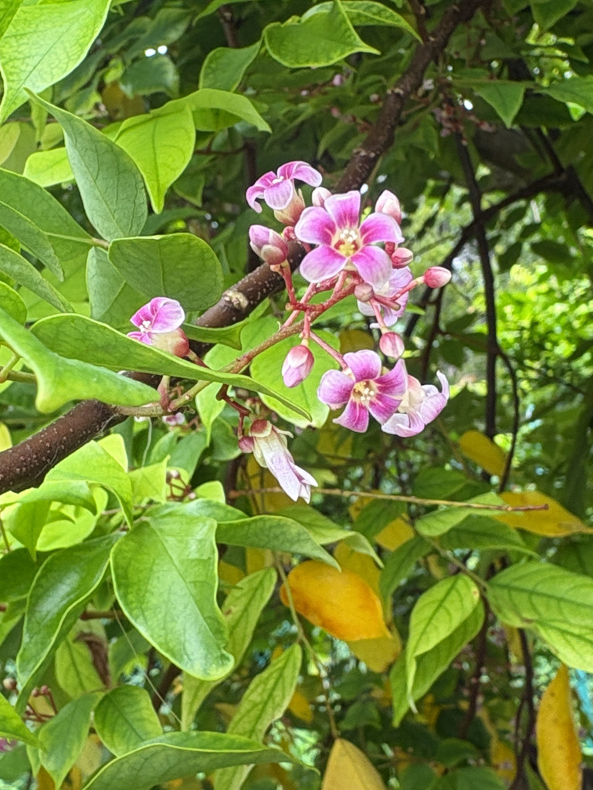

- Slice the fruit crosswise and every piece comes out a perfect five-pointed star.
- Anyone with kidney disease or reduced kidney function — including undiagnosed cases — should never eat starfruit; even a single fruit can trigger seizures or worse.
- Starfruit carries caramboxin, a neurotoxin that healthy kidneys filter out, but large quantities consumed on an empty stomach have caused acute kidney injury even in people with normal renal function.
- The tree fruits heavily, sometimes producing hundreds of pounds of star-shaped fruit in a single year.
Native to tropical Southeast Asia, likely originating in the Malay Peninsula or Indonesia. It has been cultivated across the tropics for centuries and grows well in warm, frost-free parts of Florida.
- Carambola, better known as starfruit, is grown as much for its looks as its flavor — sliced crosswise, it yields flawless edible stars that turn an ordinary fruit salad into a centerpiece. The fruit is crisp, juicy, and ranges from tart to sweet depending on variety and ripeness.
- Behind the cheerful shape sits a genuine medical caution. Starfruit contains caramboxin, a neurotoxin, and oxalic acid. The risk is greatest for anyone with kidney disease or reduced renal function — including people who may not yet know their kidneys are impaired — for whom even a small amount can cause hiccups, confusion, seizures, and in serious cases death.
- Medical literature also documents acute kidney injury in previously healthy individuals who consumed very large quantities, particularly on an empty stomach. For most people a serving is a harmless treat, but the warning is worth knowing before eating fruit that may have fallen on a public trail.
- The tree is a generous producer, flowering and fruiting through much of the warm season and often carrying flowers and fruit at the same time.
The small lilac flowers attract bees and other pollinators, and ripe or fallen fruit feeds birds and small mammals. As a dense evergreen, it offers good cover.
A small, bushy evergreen tree with a rounded, often drooping canopy.
Small, lilac to pink, in clusters on branches and twigs, sometimes straight from the trunk.
Waxy, yellow-green to golden, with five (sometimes six) prominent ribs; star-shaped in cross-section.
Pinnately compound with soft oval leaflets that fold down at night.
A small tree hung with ribbed, waxy yellow fruit. Slice one across to reveal the star — the unmistakable signature of carambola.
Important caution: starfruit contains caramboxin, a neurotoxin, along with oxalates. Anyone with kidney disease or reduced kidney function — including undiagnosed cases — should avoid it entirely.
In those cases even a small amount can cause hiccups, confusion, seizures, and potentially fatal reactions.
Even with normal kidneys, eating very large quantities on an empty stomach has caused acute kidney injury.
For most healthy adults a normal serving is low-risk, but the fruit deserves real awareness.
For dogs it's a genuine hazard: the soluble oxalates can trigger sudden kidney failure, especially from foraging fallen fruit. Keep fallen fruit picked up where dogs visit.


- © Maria Escobar (CC-BY-NC), via iNaturalist
- © Harrison Mello (CC-BY-NC), via iNaturalist
- © Austin Sibrian (CC-BY-NC), via iNaturalist
- © Ruby Meador (CC-BY-NC), via iNaturalist